ЯВЛЕНИЯ НА ПРЕНАСЯНЕ
-
ТЕОРИЯ 1.Явления на пренасяне
Явленията на пренасяне в течностите и газовете се дължат на пространствената нехомогенност на състава, на средната скорост на частиците или на температурата на системата. При всяко едно от тях се реализира резултантно пренасяне на маса, импулс или енергия в пространството. Пренасянето на дадената величина се извършва винаги в посока, обратна на съответния градиент (изменението на величина, характеризираща свойство на системата, на единица дължина). Величините, които характеризират преноса, могат да бъдат измерени експериментално. Тъй като чрез преносните явления системата се доближава до равновесно състояние, то ентропията на системата при тези процеси нараства. Транспортните явления са нестационарни явления, при които градиентът на променящата се в пространството физична величина зависи от външните условия. Когато външните условия осигуряват постоянен във времето градиент на физичната величина, той поражда съответен стационарен поток. Стационарните кинетични явления са добре изучени, а условията, от които зависи количеството на пренесената величина, се изразяват математично с помощта на няколко основни закона – закон на Фик, закон на Нютон, закон на Фурие. Разглеждането на транспортните явления от гледна точка на молекулно-кинетичната теория установяват връзка между макроскопичните коефициенти, характерни за съответните явления, и микроскопичните характеристики на частиците, изграждащи термодинамичната система. Кинетичните явления са дифузия, вътрешно триене и топлопроводност.
-
1.1. Средна честота на ударите и среден свободен пробег
Частиците на даден газ извършват непрекъснато удари помежду си, в резултат на които те променят своята посока на движение и си обменят енергия. Разстоянието λ, което молекулите на даден газ изминават между две последователни сблъсквания, се нарича свободен пробег. Тъй като свободният пробег, който изминава една частица, има различна големина, той се осреднява
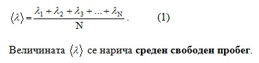
Нека частиците на даден газ са със сферична форма, с радиус r и концентрация n. В действителност, формата им не е сферична, но поради бързото им въртене в резултат на хаотичното им топлинно движение може да се приеме, че частиците имат сферична форма с посочения радиус. Ако се пренебрегне междумолекулното взаимодействие и се приеме, че ударите помежду им са идеално еластични, за да се сблъскат две молекули, е необходимо разстоянието между центровете им да бъде по-малко от 2r. Да разгледаме движението на молекула 1 от фиг. 1, считайки, че всички останали са неподвижни. В този случай разглежданата молекула ще удари всички молекули, чиито центрове се намират в цилиндър с радиус 2r. Ако това разстояние е по-голямо, както е за молекула 4, двете молекули няма да се срещнат. Поради промяна на посоката на скоростта след всеки удар, реалният път на разглежданата молекула ще е много сложен, но мислено можем да го изправим така, както е показано на фигурата. Броят на сблъскванията на молекулата за единица време определя честотата на ударите z. От фигурата се вижда, че честотата на ударите z е равна на броя на частиците, чиито центрове се намират в цилиндър с радиус на основата d = 2r и образувателна , която е равна на средната скорост на молекулата, т.е
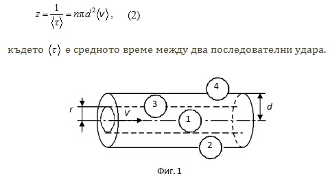
Величината пd 2 се нарича микроскопично ефективно сечение .Така за средния свободен пробег се получава зависимостта
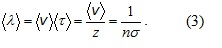
Ако се отчете движението на останалите молекули, то относителната им скорост ще се увеличи, което ще доведе до увеличение на честотата на ударите корен квадратен от 2 пъти, т.е.
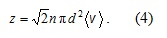
Числителят няма да се промени, защото представлява пътят, който изминава молекулата за единица време, а той остава равен на (V) . С тази поправка изразът за средния свободен пробег добива вида
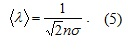
Доколкото при T= const концентрацията n се променя пропорционално на налягането, то
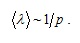
Поради това, че молекулите не са идеално твърди сфери, при увеличаване на скоростта им, което става при нарастване на температурата, ефективният им диаметър намалява. Това води до намаляване на ефективното сечение и съответно до увеличаване на средния свободен пробег ланда . Следователно с нарастване на температурата средният свободен пробег нараства. Тази зависимост е отразена във формулата на Съзерланд
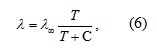
където С е константата на Съзерланд и характеризира всеки газ.
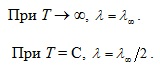
-
1.2. Дифузия
Ако газ се намира в едната страна на съд с преграда и в даден момент преградата се отстрани, след кратък интервал от време концентрацията на газа във всички части на съда ще бъде еднаква. Върху газа не действат сили. Следователно единствената причина за проникването на газа в другата част на съда е топлинното движение на молекулите му. Явлението, при което се пренася вещество в среда с еднаква температура, без това да е предизвикано от макроскопични сили, се нарича дифузия. За да се осъществи дифузия, е необходимо да е налице разлика в концентрациите на частиците в пространството (фиг. 2). Дифундиращото вещество винаги се пренася от място с по-висока към място с по-ниска плътност.
Дифузията се описва със закона на Фик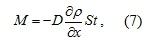
-
където M е пренесената маса газ през сечението S за време t, – градиентът на плътността, а D – коефициентът на дифузията. ∂ p /∂ x градиентът на плътността ∂ p /∂ x характеризира изменението на плътността на единица дължина в посока, перпендикулярна на разглежданата повърхност S. Коефициентът на дифузията D характеризира скоростта на пренасяне на веществото. Той зависи от условията, при които се намират веществата – температура и налягане, и от вида на двете вещества – дифундиращото и това, в което се извършва дифузията m2/s. В SI мерната единица на коефициента на дифузия е m2/s. Знакът минус в (7) показва, че преносът на вещество се извършва в посока на намаляване на плътността.
Коефициентът на дифузия е най-голям при газовете. Между коефициента на дифузия и микроскопичните характеристики на системата съществува следната връзка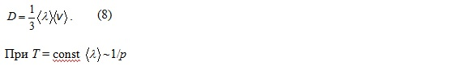
Следователно коефициентът на дифузия също ще бъде обратнопропорционален на налягането. Зависимостта на D от температурата е такава, каквато е температурната зависимост на средната скорост
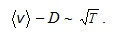
И двете зависимости са потвърдени експериментално: при постоянна температура дифузията протича по-бързо в разредените газове, а при постоянно налягане дифузията е по-интензивна във веществата с по-висока температура.
Диференциалната форма на закона на Фик е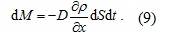
Предвид на това, че масата на газа M = Nm и плътността му е ρ = nm, където n е концентрацията на частиците, а m масата на една частица, законът на Фик може да се представи и в следния вид
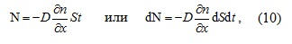
където N е броят на пренесените частици през сечението S за време t, dN – броят на частиците, пренесени през сечение dS за време dt, а ∂p /∂x е градиентът на концентрацията. Явлението на пренасяне на вещество от място, където плътността му е по-голяма, към място, където плътността му е по-малка, се нарича самодифузия. Дифузията се наблюдава не само в газове, но също така в течности и твърди тела. Например ако се притиснат две гладки пластинки от злато и олово, след година може да се установи проникване на атомите на единия метал в пластинката на другия.
-
1.3. Вътрешно триене
Вътрешното триене възниква поради стремежа да се установи еднаква скорост на теченето в течности и газове. Да разгледаме два съседни слоя 1 и 2 в течност или газ, както е показано схематично на фиг. 3. Скоростта на насоченото движение на частиците по оста x в слой 1 е , а на частиците в слой 2 –Vx2 , като Vx1
-
Експериментално е установено, че ако градиентът на x-тата компонента на скоростта в направление, перпендикулярно на движението на слоевете (в случая по оста z), е
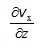
то пренесеният импулс P през сечение с площ S за време t се дава с израза (В този раздел ще означаваме импулса с голяма буква P, за да се различава от означението на налягане p)
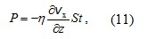
или в диференциален вид –
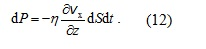
Коефициентът на пропорционалност η се нарича коефициент на вътрешно триене или вискозитет. Той е характерна величина за всяко вещество. В SI вискозитетът се измерва в Pa.s.
Молекулно-кинетичното разглеждане на взаимодействието на два слоя, течащи ламинарно с различни скорости, води до следния израз за вискозитета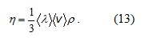
Между вискозитета η, плътността на веществото ρ и коефициента на дифузия D съществува връзка от вида
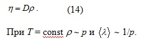
От (14) следва, че η не зависи от налягането p, което се потвърждава и от експерименталните резултати. Опитът показва, че с повишаване на температурата вискозитетът η намалява.
Обмяната на импулс между двата слоя се проявява като сила на вътрешно триене, насочена по допирателната към общата повърхност на двата слоя. Поради тази сила слоят, който се движи с по-голяма скорост (в случая слой 2), се забавя, а слоят, движещ се с по-малка скорост (слой 1), се ускорява. Силата на вътрешно триене, която действа на слой 2 от страна на съседния му слой 1 е равна на скоростта на изменението на импулса му, F = dP/dt. Със същата по големина и обратна по знак сила бързотечащият слой 2 действа на бавнотечащия слой 1. С помощта на (12) за силата F получаваме израз, наречен закон на Нютон за вътрешното триене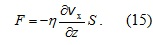
Вижда се, че силата на вътрешно триене е пропорционална на площта S на триещите се слоеве и нараства, когато разликата в скоростите на слоевете расте.
Поради наличието на сили на вътрешно триене се установява разпределение на скоростта на течене на веществото в произволно напречно сечение, така че тя е най-голяма за частиците, които са най-отдалечени от стените на съда (например в средата на течащия флуид). Молекулите на флуида, намиращи се до стените на съда, са неподвижни.
Вътрешно триене съществува също и при теченето на газовете, но е значително по-слабо. Характерно за него е, че то намалява при намаляване на температурата. -
1.4. Топлопроводност
Известно е, че когато две тела с различна температура се допрат едно до друго, възниква пренос на топлина от по-топлото към по-студеното тяло. Явлението, при което се предава количество топлина от едно тяло на друго или от една част на тялото в друга, без да се пренася вещество, се нарича топлопроводност. Необходимото условие за протичането му е наличието на разлика в температурите на двете тела или в обема на тялото. Установяването на еднаква температура в термодинамичната система показва, че кинетичната енергия на частиците ѝ се предава чрез удари от области с по-висока към области с по-ниска температура. -
За да се опише качествено явлението, нека разгледаме цилиндричен слой от еднородно вещество с площ на основата S и дебелина dx (фиг. 4). Температурите от двете страни на слоя T1 и T2 се поддържат постоянни, като T1 > T2. Следователно, частиците отляво на слоя имат по-големи кинетични енергии и при ударите с частиците отдясно на слоя им предават част от енергията си. При това няма пренасяне на вещество. Описаният процес на пренасяне на кинетичната енергия на топлинното движение между двата слоя няма да затихне, докато разликата в температурите се поддържа постоянна. Количеството топлина Q, преминало през площта S за време t, е пропорционално на времето и на големината на площта. Освен това, колкото е по-дебел слоят, толкова по-трудно ще преминава топлината, защото ще трябва да се осъществят повече удари между частиците. Също така, колкото е по-голяма температурната разлика, толкова по-голяма ще е разликата в кинетичните енергии на частиците и при удар те ще предават повече енергия. Тези съображения дават основание да се запише формулата
-
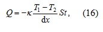
където k се нарича коефициент на топлопроводност. В SI мерната единица на k е Wm-1K-1. Коефициентът на топлопроводност характеризира скоростта на пренасяне на топлината. Той има най-високи стойности при металите. За стъклото, дървото и пластмасите е около 1000 пъти по-нисък и затова тези материали се използват като топлоизолатори.
Изразът (8.38) се нарича закон на Фурие за топлопроводността.
Диференциалната форма на закона на Фурие е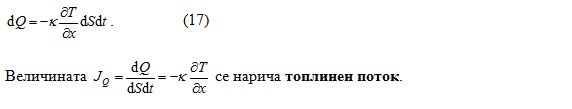
Той представлява топлината, преминала за единица време през единица площ на сечението. Вижда се, че топлинният поток зависи от градиента на температурата
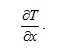
Разглеждането на топлопроводността от гледна точка на молекулно-кинетичната теория дава следната връзка между микровеличините, характеризиращи системата, и коефициента на топлопроводност k
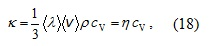
където cV е специфичният топлинен капацитет на газа при постоянен обем.
-
2. Вакуум
Вакуумът е състояние на газа в дадена област с налягане, по-ниско от атмосферното. Това понятие е валидно обикновено за газовете в затворени обеми, но може да бъде отнесено и спрямо свободен газ, например в Космоса. Степента на вакуума се определя от налягането на газовете. Физичната характеристика на вакуума е съотношението между дължината на свободния пробег на газовите молекули λ и характерния размер на обема d, в който се намира газът. В зависимост от това отношение съществува нисък вакуум (λ/d << 1), среден вакуум (λ/d ~ 1) и висок вакуум (λ/d >> 1). На ниския вакуум отговаря налягане р ~ 1 mmHg (133,322 Pa), при среден вакуум р = 1 ÷ 10-3 mmHg, при висок вакуум р < 10-3 mmHg, а при свръхвисок вакуум р ≈ 10-8 mmHg. В състояние на нисък вакуум молекулите на газа извършват чести удари помежду си и обменят енергия, затова явленията на пренасяне в газовете (топлопроводност, вътрешно триене, дифузия) са налице. В състояние на висок вакуум ударите между молекулите са редки, а по-чести са тези със стените на съда. Траекториите на движение на молекулите са праволинейни, а явленията на пренасяне не се подчиняват на класическите закони.
За получаване на вакуум се използват различни устройства за извеждане на газове и пари от затворени обеми, наречени с общото наименование вакуумни помпи. Те се различават по принципа на работа и граничното налягане на газа, което могат да достигнат; по бързината на вакуумиране (обем на газа, който се отстранява за единица време при определено налягане) и максималното налягане, при което помпата може да започне работа. Най-общо вакуумните помпи се определят като форвакуумни (за получаване на нисък и среден вакуум) и високовакуумни (за висок и свръхвисок вакуум). Два са основните принципа на действие на вакуумните помпи: извеждане на газа извън вакуумирания обем (проточни помпи) и свързване на газовете вътре в самата помпа (сорбционни помпи). Съществуват също така специални имплатационни, паладиеви и каталитични вакуумни помпи за разреждане на водород и др.
Проточните вакуумни помпи са механични, струйни и молекулярни. Механичните помпи работят на принципа на периодично разширение на обема на работната камера и изхвърляне на газа навън при последващото намаляване на обема. В струйните помпи газът се изтегля от обема, увлечен от струя течност или пара, която изтича със свръхзвукова скорост от соплото на помпата. В молекулярните вакуумни помпи газовете се изхвърлят от обема като се увличат от бързо въртящ се ротор със скорост, сравнима със скоростта на топлинното движение на молекулите. С помощта на механичните и струйните вакуумни помпи се достигат остатъчни налягания на газовете до 10-11 mmHg, а с помощта на молекулярните – 10-12 mmHg.
В сорбционните помпи газът се сорбира на повърхността на пористи материали, като зеолити, силикагел, активен въглен (адсорбционни помпи); поглъща се след изпарение от повърхности със специално нанесени химически активни метали, като барий, титан, тантал, молибден или композитни материали (изпарителни помпи); йонизира се с помощта на бомбардиращи електрони и се сорбира върху подходящ кондензиран сорбент (сорбционно-йонни помпи). В съвременните криогенни или кондензационни помпи се извършва кондензация и адсорбция на парите и газовете върху повърхности, които са охладени до много ниски температури, така че налягането на наситените пари да се понижи под налягането, което трябва да се създаде в съда. С тях се постига свръхвисок вакуум с налягане до 10-15 mmHg, със скорост на разреждане хиляди литри в секунда.
За измерване на степента на вакуумиране са разработени прибори, наречени вакууметри. Действието им се основава на различни принципи, пряко или косвено свързани с налягането на газа. Всеки от тях е разработен за различни области от налягания. Различават се течни, деформационни, радиометрични, топлинни, йонизационни и др. вакууметри. Действието на част от тях не зависи от вида на газа (течни, деформационни), а действието на останалите (топлинни, радиометрични, йонизационни) е в зависимост от вида на газа.
С класическия течен вакууметър се определят налягания, не по-ниски от 10-2 mmHg. Той представлява U-образна тръба, запълнена с течност (живак или масло), в едното от колената на която се намира газ при определено налягане р0, а в другото газът е под налягането р, което се измерва. Разликата в наляганията в колената се уравновесява от стълб течност с височина h, т.е.
р – р0 = ρgh, (19)
където ρ е плътността на течността. Възможно е вакууметърът да е с отворено коляно (р0 = рatm) или със затворено коляно (р0 = 0). В първия случай се определя разликата между атмосферното и измерваното налягания, а във втория се определя абсолютното налягане на вакуумирания газ. В деформационните вакууметри налягането на газа се определя по деформацията на еластичен датчик (мембрана, спираловидна тръба или пружина). Действието на топлинните вакууметри е основано на зависимостта на топлопроводността на разредените газове от налягането. Тънка нишка, която се нагрява от електричен ток, е разположена в херметичен балон. При изменение на налягането на газа в балона се изменя нейното топлоотдаване към газа и ако през нея протича постоянен ток, тогава температурата на нишката се променя. Възможно е вакууметърът да работи и с постоянна температура на нишката, което означава, че при изменение на налягането трябва да се измени големината на електричния ток през нея. И в двата случая, по измененията на температурата или на силата на електричния ток през нишката, се определят измененията в налягането на газа. -
© ROGACHEV